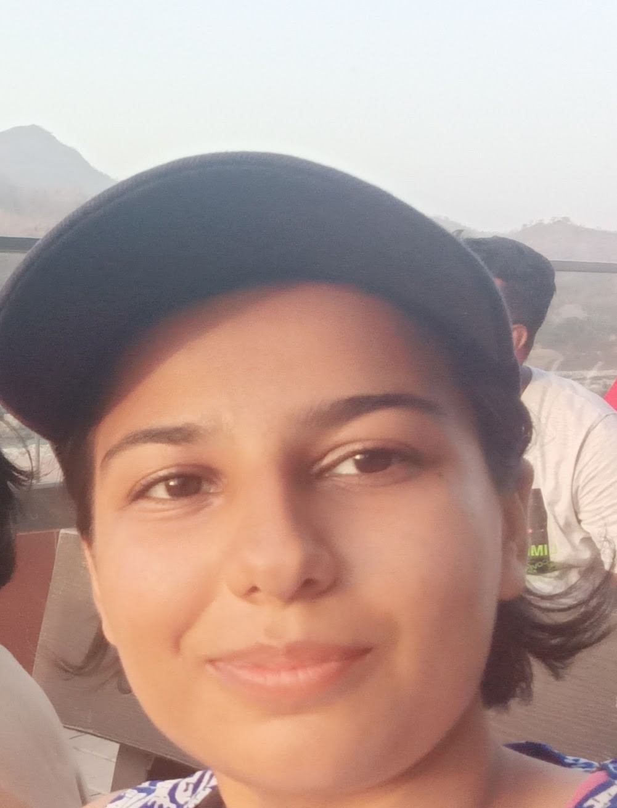
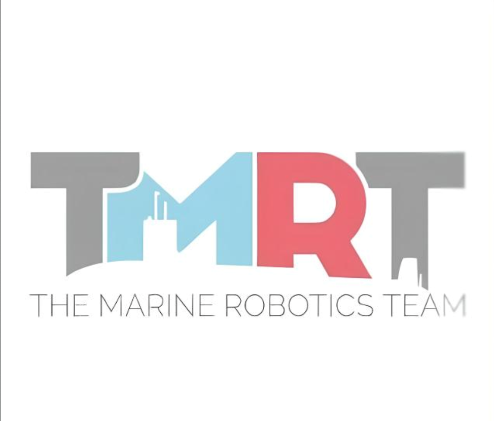
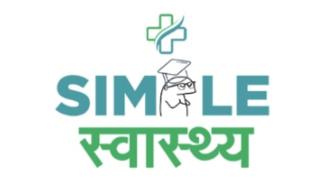
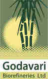
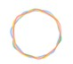

|
Aastha Ketan Kataria I'm a B.Tech Information Technology student with Honours in AI & ML at K J Somaiya College of Engineering, Mumbai. My journey began not in classrooms, but across diverse landscapes—from table tennis courts to sailing ships, from robotics workshops to hackathon venues. This interdisciplinary foundation, built through years of exploration and discovery, has shaped me into someone who bridges complex technical concepts for both experts and laypeople alike. As Team Captain of The Marine Robotics Team and winner of the Smart India Hackathon 2024, I've learned that we are the sum of our actions. Each project, competition, and research endeavor builds upon the last, creating a resilient foundation for tackling the next challenge in AI, robotics, and beyond. |
 |
{kind=link}
Research & InnovationMy research interests span computer vision, AI/ML applications, and robotics. I focus on developing practical solutions using deep learning, particularly in object detection, autonomous systems, and industrial applications. My journey from hands-on building to theoretical inquiry has culminated in a passion for contributing new knowledge to the field. Some key projects are highlighted. |
|

|
The Marine Robotics Team (TMRT): Leading Innovation in Aquatic Robotics
Aastha Ketan Kataria (Team Captain/Co-Captain) Mega project , 2023-2025 As Project Lead, I had lead the development of 'Nisrag,' a sewage cleaning robot, and have contributed to the design of an aquatic desilting robot and a drone-based groundwater mapping system, all utilizing ROS (Robot Operating System). This work represents the intersection of environmental sustainability and cutting-edge robotics technology. |
|

|
Smart India Hackathon 2024: SimpleSwastha Hospital Management System
Aastha Ketan Kataria (Team Lead) and team Smart India Hackathon 2024 - WINNER My most memorable victory. After placing second in our internal college round, our team was selected as one of the top 5 from over 500 applicants. As team lead, I guided us through the Grand Finale in Chhattisgarh, where we emerged as winners among the final five teams. This comprehensive hospital management application streamlines patient care and medical record management. |
|

|
Real-time Contaminant Detection in Industrial Sugar Production
Aastha Ketan Kataria (Project Lead) Godavari Biorefineries Ltd., 2024-2025 Selected as the only girl among 30 students, I led a team of 15 on a project in Karnataka. We're developing a proof-of-concept for a real-time contaminant detection system in sugar production lines using the YOLOv8 model to automate and enhance quality control. This project bridges AI research with practical industrial applications. |
|  |
MoneyMind: Multi-Agent GenAI Financial Assistant
Aastha Ketan Kataria (Team Lead, Team Void) Google Solution Challenge 2024 Leading Team Void, we tackled the challenge of helping new investors make better financial decisions by developing a multi-agent GenAI financial assistant powered by Google Gemini. From overcoming hardware limitations to mastering deep AI concepts from scratch, we built a product we are immensely proud of. Though we didn't make the Top 100, it was an extraordinary learning experience. |

|
Myntra WeForShe Hackathon
Aastha Ketan Kataria (Team Lead) Myntra WeForShe Hackathon 2024 - PRE-FINALIST Leading my team, we progressed from an initial pool of over 1000 participants, through narrowing rounds of 60, to reach the Grand Finale. This was a masterclass in product development, pitching, and self-motivation—demonstrating the power of persistence and strategic thinking in competitive environments. |
Academic Research: From Application to CreationMy journey from hands-on building to theoretical inquiry has culminated in a passion for research, allowing me to contribute new knowledge to the field of AI and machine learning. |

|
DeepPET-3D: A 3D Convolutional Neural Network for Early Detection of Alzheimer's Disease Using 18F-FDG PET Imaging
Aastha Ketan Kataria and collaborators Taylor & Francis, ICTEAH-2025 Co-authored research on a novel 3D-CNN that analyzes entire 3D PET scans to detect Alzheimer's Disease. Our model achieved up to 96.91% accuracy, offering a powerful tool to support clinicians and enable earlier patient intervention. |

|
Machine Learning-Based Disease Prediction System using Symptom Analysis
Aastha Ketan Kataria and collaborators - Best Speaker Award Taylor & Francis, ICTEAH-2025 Developed a system to predict over 230 diseases from symptoms. Our Weighted KNN model achieved 93.5% accuracy, showcasing the potential for scalable, contact-free preliminary health screening. I was honored with the Best Speaker award out of 10 presenters for this paper. |

|
Comparative Analysis of Standard vs. Curriculum-Based PPO in Quadrupedal Locomotion
Aastha Ketan Kataria and collaborators Springer, ICICCT 2025 Our research challenged the conventional wisdom of curriculum learning in AI. We demonstrated that for complex quadrupedal locomotion, standard reinforcement learning outperformed curriculum-based strategies due to a "negative transfer" effect, highlighting the need for empirical validation in advanced AI. |
Professional Growth and ImpactMy practical skills have been sharpened through a series of impactful internships and projects, each building upon the foundation of discipline, leadership, and technical excellence established in my formative years. |
|
AI Engineer Intern - CredArtha (2025)
Project Lead - Godavari Biorefineries Ltd. (2024-2025)
Summer Intern - PiPay (2024)
Developer - Virtual Labs (2025)
Student Volunteer & Mentor - Agastya International Foundation |
From Tinkering to Innovation: The Engineering SparkMy first formal step into product creation began in seventh grade with Eduprime, a robotics class that became my workshop for ideas. I started by building an auto-movable shopping trolley and progressed to designing a portable, eco-friendly air conditioner. This work led to my selection among the top 70 out of 300 applicants at the "Story of Makers" exhibition. Later, my colleague and I secured third place at the INSEF science fair in Pune for our auto-movable, multipurpose farm equipment. In my second year, I took the entrepreneurial leap and attempted to launch "Math with Origami," aiming to integrate mathematical concepts into daily-use items. While I was the only student in my batch to undertake such a venture, the experience taught me the fundamentals of business: writing formal proposals, defining customer value, and pitching products. This entrepreneurial pursuit was enriched by my experience at a summer school on computer vision and AI at IIIT Hyderabad, where I learned from seasoned founders about the real-world dynamics of tech industry success. |
Technical ArsenalLanguages & Frameworks: Python (NumPy, Pandas, Matplotlib, OpenCV, Kivy), C/C++, JavaScript, HTML/CSS, Django, React, SQL, Java, PHP, Flutter, RAG, LLM fine-tuning AI & Robotics: YOLOv8, Computer Vision, Deep Learning, Reinforcement Learning (PPO), ROS (Robot Operating System), LiDAR integration, Autonomous Systems Tools & Platforms: AutoCAD, SolidWorks, MATLAB (Simulink, Stateflow, Image Processing), Arduino, Git, Docker, Google Gemini, TensorFlow, PyTorch |
My Journey of Action and Self-DiscoveryThey say we are the sum of our actions, a philosophy that has defined my journey since I can remember. From first to eighth grade, I immersed myself in table tennis, gymnastics, skating, chess, badminton, art, and speech. This wasn't about collecting trophies, though I was fortunate to win several at the inter-club level. It was a foundational education in developing a sense of self—learning to make connections between disparate fields, a skill that has become my greatest asset in interdisciplinary environments like hackathons, tech expos, and summits. |
Forging Discipline and Leadership: The Sea Cadet CorpsMy journey took a more structured turn from fifth to ninth grade when I joined the Sea Cadet Corps (SCC) on Training Ship Jawahar. Every weekend was an exercise in discipline—mastering rowing, sailing, rigging, and semaphore. The SCC instilled in me a profound sense of punctuality, ethics, and personal conduct. I was honored to be chosen to lead and command marching divisions, building the resilience and disciplined mindset that underpins all my subsequent endeavors. Of the initial 400 cadets, only 150 remained after five years—a testament to the program's rigor and the strength it builds. |
The Sum of ActionsFrom the diverse playgrounds of my childhood to the rigorous discipline of the Sea Cadets, the creative crucible of robotics, the high-pressure environment of hackathons, and finally, the intellectual frontier of academic research—every action has been a deliberate step. Each experience has built upon the last, creating a resilient, interdisciplinary, and passion-driven leader, builder, and researcher ready for the next challenge. This journey has taught me that mastery comes not from avoiding challenges, but from embracing them fully. Whether leading teams through 24-hour hackathons, coding solutions from scratch, or presenting research to academic audiences, I've learned that any concept—including complex mathematics and algorithms—can be mastered with sufficient effort and passion. |
|
Website design inspired by Jon Barron.
|